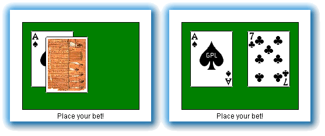
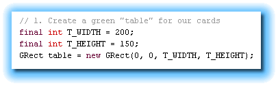
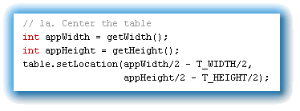
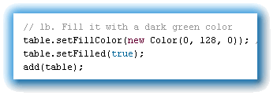
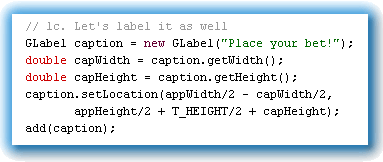
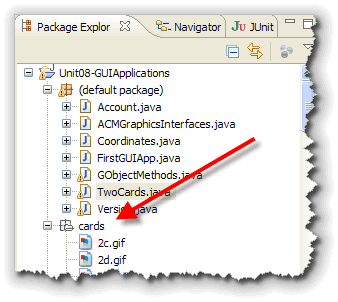
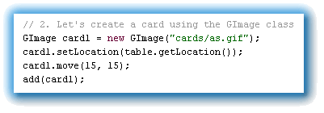
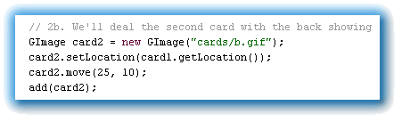
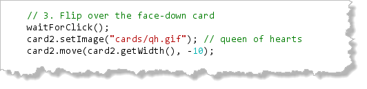

Let's finish up our exploration of
the
Let's finish up our exploration of
the GObject family,
by looking at a class that let's us manipulate images.
The GImage class that allows you to display
JPEG and GIF images in your programs, and then modify
the individual pixels that make up the picture.
You've already met most of the methods you need, so to give you a
quick flavor for some of the other classes
in the acm.graphics package, let's build a simple
program called TwoCards. Our program will:
- Display a dark-green "table" in the center of the application with a caption saying "Place your bets!" underneath it.
- Draw two playing cards on the table, one face up, and one face down.
- Flip over the face-down card and set it next to the face-up card when it's clicked with the mouse.
Here's a screen shot that shows the program when it
first loads (on the left), and a shot of the applet
after the user has clicked the face-down card:

To start, create an ACMGraphicsProgram named
TwoCards, following the same steps you followed for
MyFirstAcmGuiApp in the last chapter. Make sure you
save your file in the Chapter08 folder and import the
acm.program, acm.graphics and
java.awt packages. Place your
code in the run() method.
Part 1: The Table
To create the table, we'll use the GRect class.
GRect is one of the Fillable classes,
so you can specify an interior color that's different than
the background. We'll make our interior dark green.

Start by defining a couple of constants,T_WIDTH
and T_HEIGHT to represent the width and height of
our table (instead of using magic numbers).
Then, create
a GRect object named table using the
constructor. Use 0,0 for the origin, and pass your two constants
for the width and height like that shown in the screenshot.
Positioning

To position the table, you'll need to subtract one-half its width and one-half its height from the width and height of your program itself. Remember, you can get those numbers by calling thegetWidth() and getHeight() methods.
Then, use the setLocation() method to position the
table object in the center of the screen, like that
shown in this screenshot.
Color and Add

To color our table, we need to do three things:- Use the
GRectmethodsetFillColor()to the background color we want for the table. I've used theColorconstructor to create a dark green felt color. - Send the
setFilled(true)message to the table to tell it to fill itself in when it's drawn. - Add the finished component to our program's canvas, so we can see it.
The screenshot shows the code for each of these steps.
Add a Caption

Since we've already had experience using theGLabel
class, you should be able to figure out how to add the
table caption so that its centered right underneath the
table itself.
The secret lies in figuring out where the bottom of the table is on the screen, and then adding the height of the caption itself to that number for the vertical position of the label.
The screenshot to the right shows what the calculations should look like.
Step 2: Drawing the Cards
The ACM GImage class allows you to easily display
and position objects created from standard JPEG and GIF images.

For this problem, I've downloaded the GPL card images from http://www.waste.org/~oxymoron/cards/ and placed them in this week's download folder. You can use these images without charge, but if you eventually create a commercial product, you'll need to replace them with a different set.Each card image is stored in a separate file, so they're fairly easy to manipulate. The two of Clubs is in the file 2c.gif, the Ace of Spades is in as.gif, and so on.
To make sure all of the filenames are only two characters long, the "tens" are in a set of files named like tc.gif instead of 10c.gif. Also, the file b.gif is used for the backs of the cards.
Card 1: The GImage Class
We'll need to create two cards for our program, so
I'll just name them card1 and card2.
To create the card objects, we'll use the GImage
class.

GImage actually hides a lot of complexity that
you'll be exposed to later. Right now, to construct your first
card object, simply pass it a String containing
the path to the image file you want to use. This path needs
to be relative to the location of your Java program.
Once you've created the card1 object, you can
position it with setLocation(). Rather than
calculating the location independently, we can just
"put it on the table" by asking the table object
for its location (using table.getLocation()),
and passing that value.
Then, because we don't want to display the card in the
upper-left corner of the table, we can use the move()
method to move the card in from the left and down from the top.
The screenshot shows the code required to do this.
Card 2, Face Down

The second card uses almost exactly the same code, with the following differences:- We used the image for the back of the card, so the card appears dealt "face down".
- We used the location of the first card when positioning our second, rather than the location of the table.
- We moved the second card so that a little more of the first card shows.
The code for the second card is shown in the screenshot here.
Moving the Card
In the next chapter you'll start learning how to handle mouse clicks and
button presses. For right now, you can just use this code to
cause your program to pause, waiting for a mouse click. (We
aren't actually checking to see if the user clicks the face
down card. We'll do that later.)

When the user clicks the mouse, we do two things:- change the image displayed by the
GImageobject namedcard2. Instead of constructing a newGImageobject, we simply replace its picture property. - move the second card into position using its
move()method. We use its own width to determine how far to move it to the right. We use a negative amount for the vertical position, since we started the card 10 pixels down from the top ofcard1.
Go ahead and compile and run. Make sure that you can flip over your card when you click the program. As you can see, Blackjack isn't far away.
There are several other classes in the ACM Graphics package you might want to learn about. A great way to meet them is to reach Chapter 2: Using the acm.graphics Package, in the JTF Tutorial, available in PDF format by clicking the link in this sentence.